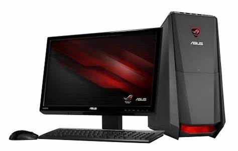

Introductie
In deze website neem ik je mee door mijn reis tijdens de opleiding INFT. Je ziet hier mijn projecten, thema's en wat ik heb geleerd in leerjaar 3 en 4. Van het werken aan websites tot het maken van films en onderzoeken met AI — alles komt voorbij. Dit is hoe ik INFT heb ervaren.
Leerjaar 3
Thema 1: Webontwikkeling
In dit thema heb ik gewerkt aan de basis van webontwikkeling. Ik leerde hoe je een eenvoudige website maakt met HTML en CSS. Tijdens de lessen bouwde ik zelf een website en leerde ik over structuur, opmaak en het gebruik van kleuren en lettertypen.
Ik vond het interessant om te ontdekken hoe een website van binnen werkt. Het was leuk om iets te maken dat je meteen kunt zien in je browser. Sommige dingen waren lastig, zoals het goed positioneren van elementen of het netjes maken van de opmaak.
Ik vind dat ik het goed heb gedaan, al was het soms lastig.
Thema 2: Creatief Ontwerpen & Storytelling
In dit thema heb ik gewerkt met verschillende tools zoals Scratch en Cards. Ik heb geleerd om verhalen te vertellen met beeld en geluid, en om een interactief verhaal op te bouwen. Ook ben ik aan de slag gegaan met muziek, 2D- en 3D-ontwerpen, en het maken van animaties.
Een van de leukste opdrachten was het ontwerpen van een fantasiedier: ik maakte een bruine konijnbeer. Hiervoor deed ik ook onderzoek naar hardware en software, zodat ik wist hoe ik mijn idee kon realiseren.

Ik vond het leuk om mijn creativiteit te gebruiken in dit thema. Er kwamen veel verschillende onderdelen aan bod, dus er was genoeg afwisseling. Soms was het wel een beetje puzzelen om alles te laten werken zoals ik wilde.
Ik vond het leuk om creatief bezig te zijn en mijn fantasie te gebruiken. Soms was het lastig om mijn ideeën technisch uit te voeren.
Thema 3: HTA
Teamleden: Naomi, Camiel, Vince, Haye
In dit project werkten we aan het ontwerpen van een escapebox. We begonnen met een nieuwe huisstijl voor het Elde College. Ik ontwierp hiervoor een nieuw logo, met andere kleuren en een originele slogan.
In de eerste weken deden we verschillende voorbereidende opdrachten:
- De multifocustest
- De marshmallow challenge
- Het maken van een moodboard
Daarna werkte ik mee aan de puzzels en de digitale ontwerpen van de escapebox. In week 4 ontwierpen we een puzzel waarbij het antwoord “water” was. Ik had hier een actieve rol in.
Wat heb ik geleerd?
- Samenwerken is soms lastig, vooral als de groep niet goed samenwerkt.
- Leiding geven ging mij goed af, al had ik soms het gevoel dat ik de meeste taken deed.
- Ik heb beter leren presenteren en ideeën uitwerken in een team.
Hoe vond ik het?
Het was leuk en leerzaam om een escapebox te ontwerpen. De samenwerking was niet altijd makkelijk, maar er waren ook veel creatieve en gezellige momenten.
Waar ben ik trots op?
- Mijn inzet en mijn rol als leider
- Het eindresultaat van het escapebox prototype
- Mijn ontwerpen en ideeën, zoals het logo en de puzzels
Thema 4: Apps & Film
Vooronderzoek Apps
Een app is een programma op je telefoon of computer dat specifieke dingen doet zoals gamen, chatten of foto's bewerken. Er zijn verschillende soorten apps, zoals games en browsers. Betaalde apps bieden vaak meer functies dan gratis apps, die meestal advertenties bevatten. Veiligheid is belangrijk vanwege persoonlijke gegevens en bescherming tegen virussen.
Vooronderzoek Film
Er zijn vier films onderzocht, zoals The Present en Paperman, met focus op animatie, verhaal en doelgroep. Ook zijn technieken zoals long shots, close-ups, tracking shots en overgangen zoals fade-ins en flashbacks onderzocht. Speciale effecten zoals voice-overs en software als Adobe Premiere Pro kwamen aan bod.
Eigen Film: GESTELSE SCHOOL
De film toont beelden van onder andere de schoolentree, klaslokalen, kantine en plein. De film geeft een blik op het Elde College en de sfeer ervan.
Review:
Een boeiende blik op het Elde College in Gestel. Mooie beelden en persoonlijke verhalen tonen de rijke geschiedenis en moderne aanpak van de school. Soms wat langdradig, maar zeker de moeite waard. Rating: 4/5
Reflectie:
- Verschillen met het originele script: de tijdsplanning werd niet helemaal gevolgd.
- Oorzaak: er was niet veel te filmen op locatie.
- Trots op: het eindresultaat en de edit.
- Volgende keer: uitgebreider filmen.
App opdrachten
Bij de app-opdrachten is gewerkt met Hello Codi en een dobbelsteen-app met MIT App Inventor. Hierbij werd kennis toegepast over variabelen, random waarden, objecten, interfaces en integers. De emulator werkte niet altijd mee, maar de functionaliteit kon wel getest worden.
Terugkijken en LOB
Bij de LOB-opdracht zijn beroepen zoals Management Consultant, Softwareontwikkelaar en HR Manager onderzocht. Vaardigheden zoals analytisch denken, digitale geletterdheid, leiderschap en creativiteit kwamen hierbij aan bod. Ik heb geleerd hoe ik met blokken een app kan bouwen en een stappenplan kan volgen. Ik wist al veel van Scratch, dus dat hielp mee.
Trots op: Dat ik rustig ben gebleven toen de emulator niet werkte üòÖ
Afsluiting Leerjaar 3
Mijn eerste jaar INFT was leerzaam en leuk. Ik heb veel nieuwe dingen gedaan, zoals apps maken, filmpjes opnemen en samenwerken in projecten.
Soms was het lastig, maar ik heb doorgezet en veel geleerd. Vooral over samenwerken, creatief zijn en plannen.
Ik ben trots op wat ik heb gemaakt en kijk met een goed gevoel terug op dit jaar.
Leerjaar 4 - Thema 1: Besturingsprogramma's
Vooronderzoek 1: Wat is een besturingsprogramma?
Een besturingssysteem zorgt ervoor dat je computer werkt. Het laat je programma’s openen en taken uitvoeren. Zonder een goed werkend besturingssysteem werkt je computer traag of helemaal niet.
Vergelijking van besturingssystemen
- Mac OS 11.0: Makkelijk te gebruiken, gratis bij een Mac, installatie via de App Store.
- Windows Server 2019: Complexe installatie, minder gebruiksvriendelijk, bedoeld voor servers.
- Linux: Lichtgewicht, gratis en open-source, veel verschillende versies beschikbaar.
Vooronderzoek 2: Software voor school en alternatieven
Microsoft Office en Adobe Creative Cloud zijn beschikbaar via school. Vergelijkbare (gratis) alternatieven zijn bijvoorbeeld Google Docs, LibreOffice, Gimp, DaVinci Resolve en Affinity-programma's.
Software op verschillende systemen
- Windows: LibreOffice, DaVinci Resolve, Gimp, Affinity Photo
- macOS: Pages, Numbers, Keynote, Affinity Suite, Gimp
- Linux: LibreOffice, OnlyOffice, Inkscape, Scribus
Vooronderzoek 3: Databases
Databases helpen bedrijven gegevens op te slaan en snel terug te vinden. Programma’s als Excel en Outlook gebruiken databases. Andere bekende systemen zijn MySQL, PostgreSQL, SQLite en MongoDB.
Reflectie:
Ik vond dit thema interessant omdat ik veel leerde over besturingssystemen en alternatieve software. Ook databases vond ik boeiend om mee te werken.
Leerjaar 4 - Thema 2: Hardware en Film
Wat heb ik geleerd?
Ik heb geleerd hoe een computer van binnen werkt door zelf onderdelen uit elkaar te halen. Ook heb ik geleerd hoe je een informatief filmpje maakt met technieken zoals stop-motion en green screen. Daarnaast heb ik geoefend met het maken van toetsvragen.
Wat kon ik al?
Ik kon al filmpjes editen en die kennis heb ik gebruikt om mijn stop-motion video te maken. Ook wist ik al iets over camera-instellingen, wat hielp bij de filmopdrachten.
PC uitelkaar halen
Ik heb een filmpje gemaakt voer hoe ik een pc uitelkaar heb gehaald en belangrijke onderdelen laten zien tijdens het filmen.
Reflectie:
- vanuit slechte kijkhoek gefilmd
- Oorzaak: niet goed overnagedacht.
- Trots op: het eindresultaat en de edit.
- Volgende keer: uit een andere kijkhoek filmen.
Hoe heb ik mezelf ingezet?
Ik heb mezelf meestal goed ingezet. Soms had ik even geen motivatie, maar over het algemeen heb ik mijn werk goed gedaan.
Wat neem ik mee naar volgende projecten?
De kennis over computeronderdelen en mijn ervaring met video-editing software zoals CapCut.
Welke vaardigheden heb ik gebruikt?
- Technisch inzicht (hardware uit elkaar halen)
- Doorzettingsvermogen
- Creativiteit (film maken)
Welke beroepen horen hierbij?
- ICT (software en hardware)
- Media en video-editor
MBO opleidingen die hierbij passen:
- Software Developer
- ICT-beheer
- Media & Journalistiek
leerjaar 4 - Thema 3: The Battle of Technology & Media (Eindproject)
Wat was de opdracht?
De opdracht was om je eigen examenopdracht te maken voor inft. Ik heb gekozen voor een app maken in app inventor.
Hoe heb ik het aangepakt?
- Ik heb de hoofdopdracht bedacht.
- Ik heb deelopdrachten bedacht.
- Ik heb één voor één de deelopdrachten uitgewerkt
- Ik heb de hoofdopdracht gemaakt.
- Tot slot heb ik een conclusie gemaakt over dit thema. .
App gemaakt in App inventor
Ik heb als eindopdracht een app moeten maken in app inventor. Ik heb eigenlijk niet veel in app inventor gewerkt, want ik heb het met code taal gedaan. HTMl om precies te zijn. Ik heb de HTML code in github pages gepubliceerd. De link van mijn github page heb ik in de webviewer gebruikt van app inventor.
Wat heb ik geleerd?
- Ik heb veel geleerd over html.
- Creatief zijn is belangrijk bij deze opdracht.
- Ik heb geleerd om met github pages te werken.
- Plezier gehad!!
Moeilijkheden
Soms lukte het niet, zoals hoe ik mijn website ging publiceren. Maar uiteindelijk is het allemaal gelukt.
Wat vond ik ervan?
Ik het geweldig dat ik mijn eigen eindopdracht van inft mocht maken. Ik vond het een enorm leuke opdracht!!
Waar ben ik trots op?
Dat ik niet heb opgegeven, want ik was soms zo erg aan het stressen. Maar uiteindelijk is het een mooi project geworden!!
Hoe heb ik INFT ervaren?
IK heb inft als een van mijn favoriete vakken op school, ik heb erg veel geleerd van het vak en heb er ook erg van genoten. Soms was inft iets lastiger en had ik er een moeite mee, maar uiteindelijk lukte alles wel. IK had ook een geweldige docent voor het vak inft en zij was ook mijn mentor, dus 2 in 1. Ik vond inft een geslaagd vak om mee af te sluiten.